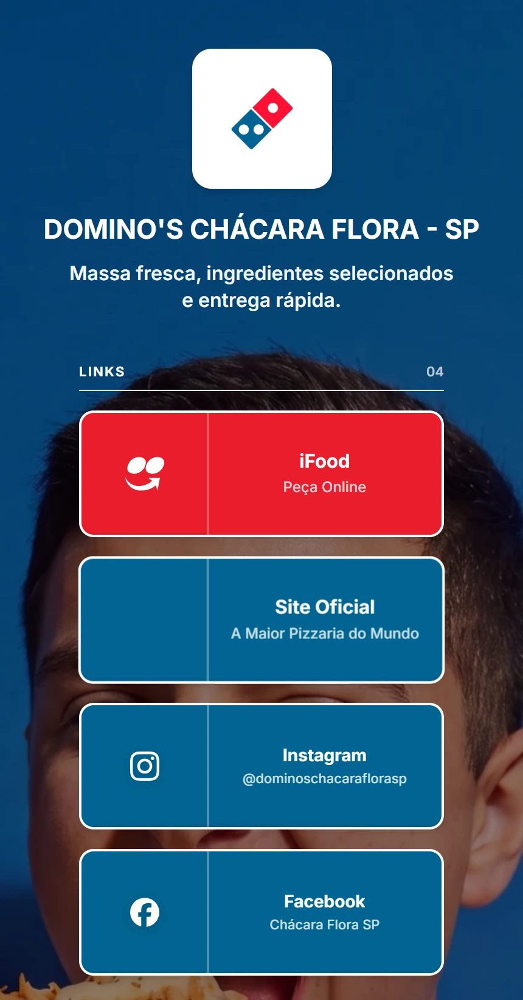
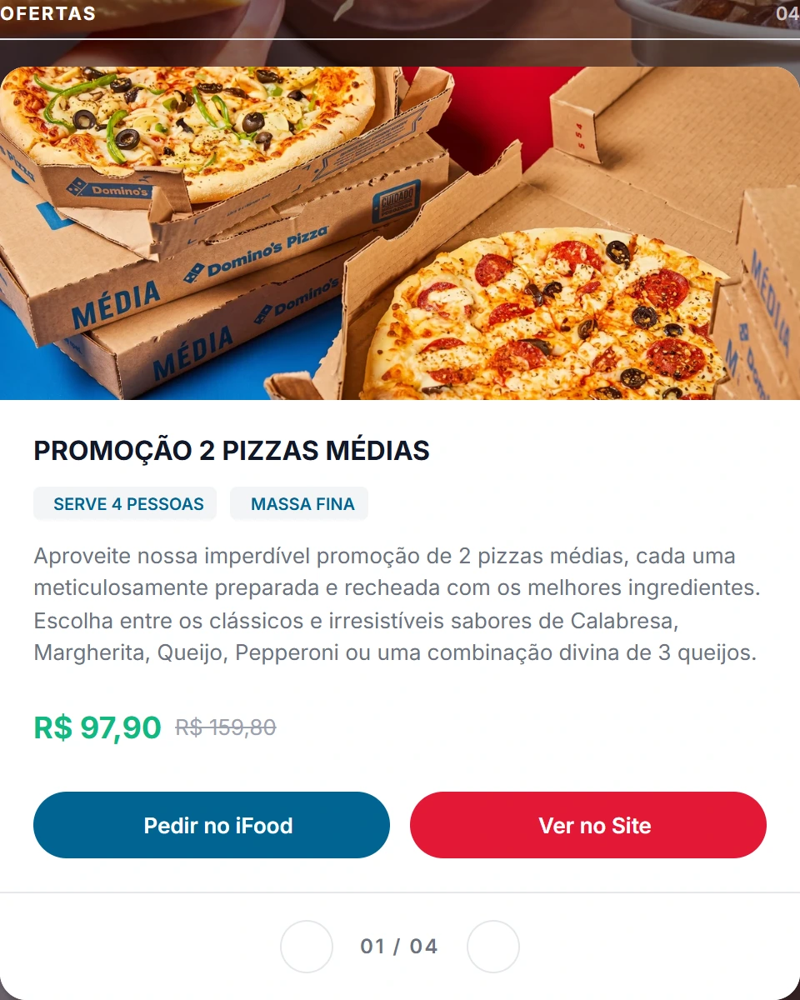

Pedir em primeiro lugar
O acesso ao iFood abre a lista e recebe a cor de maior destaque. A ação fica evidente antes da exploração dos outros canais.
Design & desenvolvimento
UI / UX
Da vontade de pizza ao próximo toque.
 Ampliar
Ampliar A página reúne os acessos da Domino’s Chácara Flora em um único endereço. Quem chega pela rede social encontra o caminho para pedir, o site oficial e os canais da unidade.
A identidade azul e vermelha organiza a entrada. O iFood recebe destaque vermelho; os demais canais vêm a seguir. Depois dos acessos, uma área de ofertas apresenta as pizzas e seus caminhos de pedido.
O acesso ao iFood abre a lista e recebe a cor de maior destaque. A ação fica evidente antes da exploração dos outros canais.
Nome, localização e redes da Chácara Flora identificam a operação local dentro da marca Domino’s.
Imagem, descrição e opções de pedido ficam próximas na área de ofertas. Cada promoção aponta para o canal em que a compra continua.

Ampliar
AmpliarA composição usa uma coluna de links seguida por ofertas. No celular, os acessos ocupam a largura de leitura e a fotografia permanece no fundo; no desktop, o conteúdo fica concentrado no centro.
Os botões combinam ícone, nome do canal e indicação da ação. iFood, site oficial e redes sociais têm destinos próprios, sem introduzir um checkout na página de links.
As ofertas reúnem imagens, descrições e chamadas de pedido. O escopo do trabalho é esta página da unidade Chácara Flora, com a identidade e o conteúdo da marca aplicados à interface.
Visitar o site